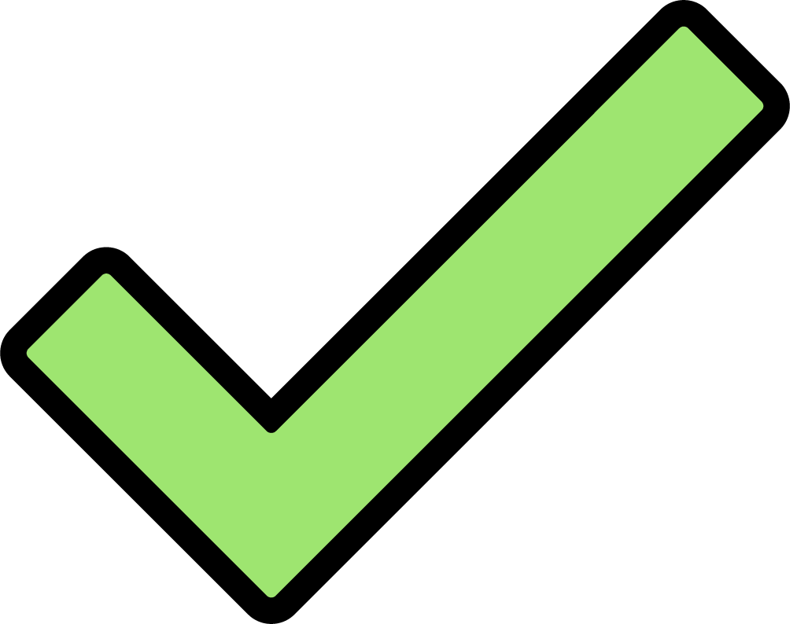

Choose which eye to test. Choosing the left eye requires you to cover your right eye. Choosing the right
eye
requires you to cover your left eye. Choosing both eyes will do both processes, starting with the left
eye.

Now cover your left eye, and with your right eye focus on the black dot in the center.
Follow same directions as previous test.